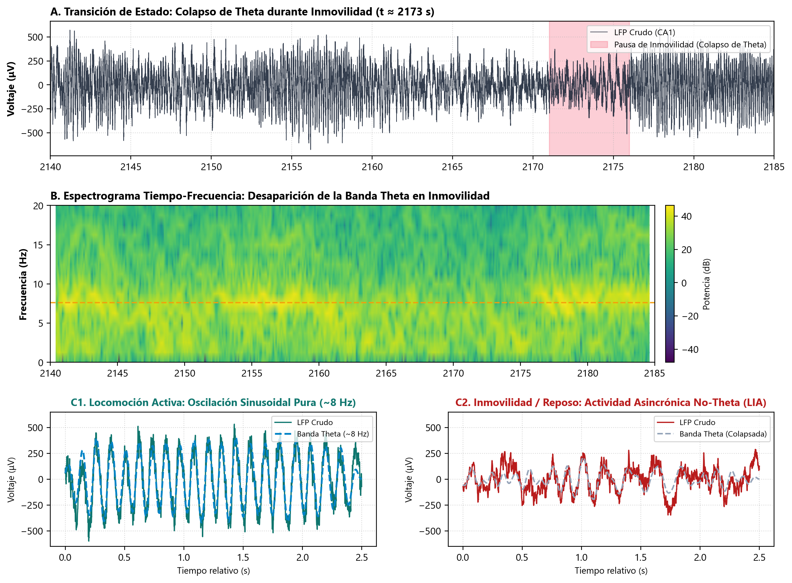
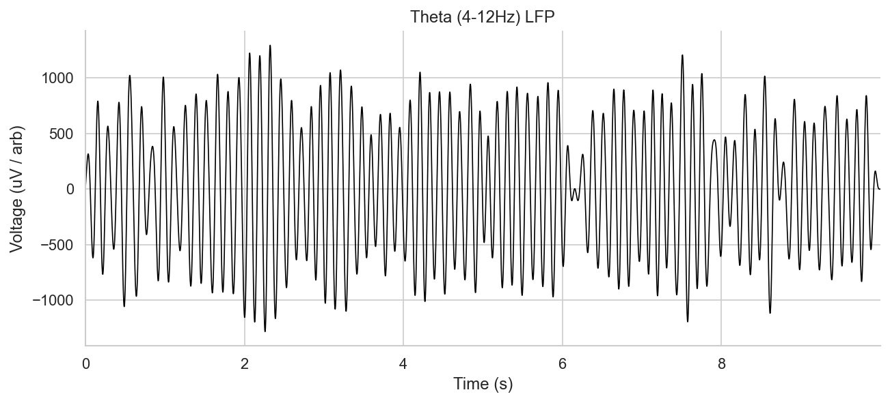
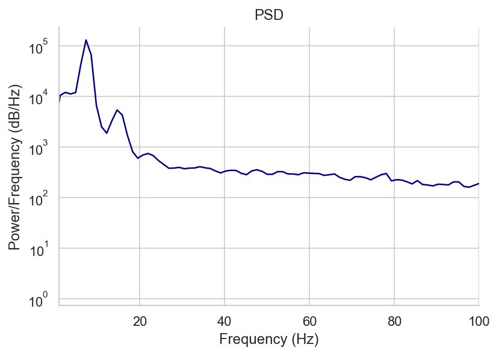

📄 Vanderwolf (1969) • Buzsáki (2002)
1. Detección de Estados: Locomoción vs Reposo
Se calcula la envolvente instantánea de Hilbert \(A_\theta(t) = |\mathcal{H}\{x_\theta(t)\}|\) y el ratio \(\Theta/\Delta(t) = \frac{A_\theta(t)}{A_\delta(t)}\). Cuando el animal se desplaza activamente, la oscilación a \(\sim 8\) Hz emerge con alta potencia (\(>500\,\mu\text{V}\)), mientras que en reposo colapsa y da paso a actividad irregular lenta (LIA).
2. Filtrado de Fase Cero y Demodulación
Filtro Butterworth pasa-banda de orden 3 (\(4-12\) Hz) bidireccional (filtfilt, \(\tau_g = 0\)) seguido de la señal analítica de Hilbert:
$$z(t) = x_\theta(t) + j \mathcal{H}\{x_\theta(t)\} = A_\theta(t) e^{j \theta(t)}$$
$$\theta(t) = \operatorname{atan2}(\mathcal{H}\{x_\theta(t)\}, x_\theta(t)) \in (-\pi, \pi]\text{ rad}$$

Figura 1. Contraste temporal y espectral verificado: En Locomoción Activa (\(t \approx 466\) s) el LFP oscila a \(\sim 8\) Hz regulares con potencia de \(40,304\,\mu\text{V}^2/\text{Hz}\); en Inmovilidad / Reposo (\(t \approx 2173\) s) la oscilación Theta colapsa por completo y la potencia cae \(32.8\times\) a \(1,228\,\mu\text{V}^2/\text{Hz}\).

Figura 2. Transición continua en el tiempo: Espectrograma STFT demostrando la emergencia sincronizada de la banda Theta (7.6 Hz) exclusivamente durante la locomoción.

Figura 3. Señal LFP tras filtrado digital de fase cero en la banda Theta (4–12 Hz).

Figura 4. Densidad Espectral de Potencia (PSD de Welch) demostrando el marcado pico dominante en \(f_0 \approx 7.6\) Hz.